Префектура Миэ · Исэ · улица и еда
Окагэ-ёкотё: как дом сладостей Акафуку вернул жизнь улице у святилища Исэ
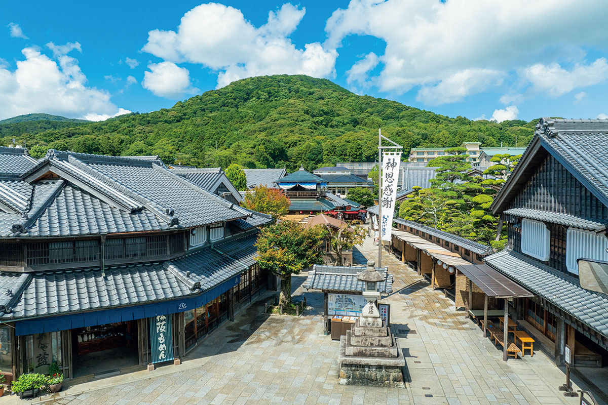
В эпоху Эдо каждый японец мечтал хотя бы раз в жизни дойти до святилища Исэ. У самых его ворот почти 300 лет работает дом сладостей Акафуку, и именно он построил улицу Окагэ-ёкотё, куда сегодня приезжают около пяти миллионов человек в год.
Паломничество
Путешествие, о котором мечтали всю жизнь
Святилище Исэ японцы ласково зовут «О-Исэ-сан» и считают общим покровителем всей страны. Молятся здесь больше двух тысяч лет. Официальное название святилища просто Дзингу, и под ним понимают целый комплекс: Внутреннее святилище Найку, Внешнее святилище Гэку и ещё 123 малых святилища, всего 125.
В эпоху Эдо говорили: «Хоть раз в жизни сходи в Исэ». Простые люди мечтали о такой дороге, и время от времени по стране прокатывалась настоящая лихорадка паломничеств. Её называли окагэ-маири, от слова «окагэ», милость богов. Волны поднимались примерно раз в 60 лет, а самая большая пришлась на 1830 год: тогда, по преданию, за несколько месяцев в Исэ пришли около 4,27 млн человек, каждый шестой житель тогдашней Японии.
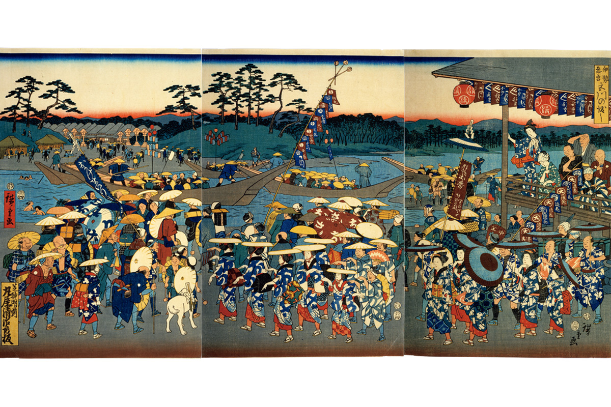
Этот путь изображал и Хиросигэ Утагава (1797–1858), один из самых известных мастеров японской гравюры укиё-э, автор серий видов дорог и городов страны. На его листе паломники переправляются на лодках через реку Миягава: за ней начиналась земля святилища.
Дойти до Исэ помогал обычай сэгё. Жители городков вдоль дорог бесплатно давали паломникам еду, вещи и ночлег: считалось, что доброе дело копит заслуги. Благодаря этому даже человек без денег мог добраться до святилища и помолиться.
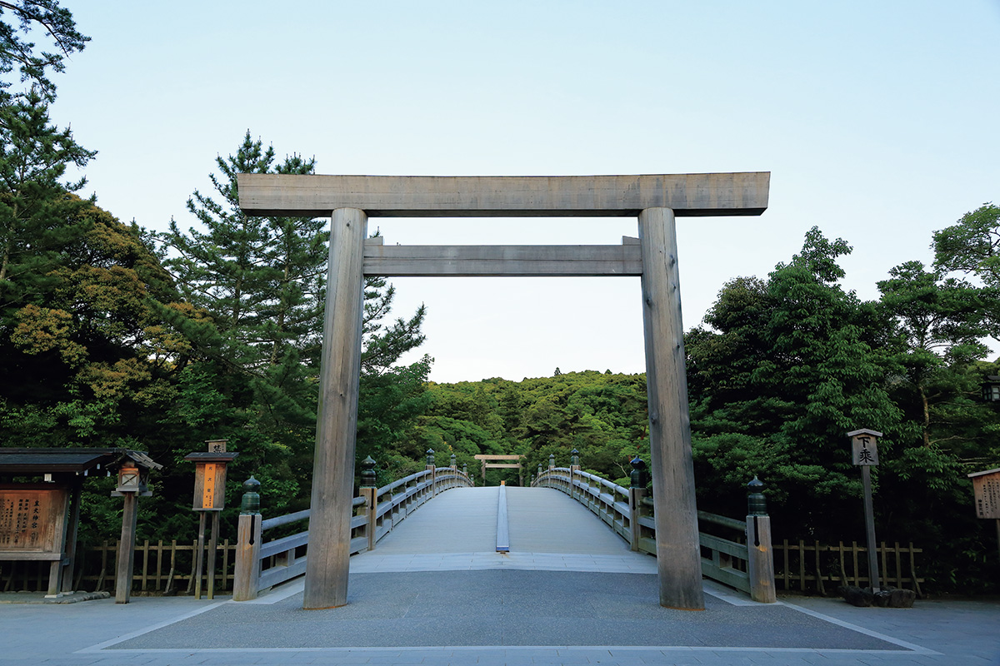
Дух сэгё до сих пор живёт в Охараи-мати, квартале перед Внутренним святилищем, где почитают богиню солнца Аматэрасу-омиками. Квартал стоит у моста Удзибаси через реку Исудзу, и для паломников здесь заканчивалась дорога. До начала эпохи Мэйдзи тут стояли около 300 домов онси. Онси были служителями святилища и посредниками между ним и паломниками, а заодно устроителями всего путешествия: они селили гостей у себя, щедро угощали и проводили для них очистительный обряд охараи. От этого обряда и пошло название квартала.
Святилище Исэ
- Адрес
- Внутреннее святилище Найку: префектура Миэ, Исэ, Удзи-Тати-тё, 1. Внешнее святилище Гэку: префектура Миэ, Исэ, Тоёкава-тё, 279
- Телефон
- +81 596-24-1111 (9:00–16:00)
- Часы работы
- январь–апрель и сентябрь 5:00–18:00; май–август 5:00–19:00; октябрь–декабрь 5:00–17:00
Акафуку
Дом сладостей с 1707 года
На 800-метровой дороге от моста Удзибаси вдоль реки Исудзу стоит главный магазин Акафуку: его издалека видно по большой вывеске с золотыми иероглифами под двускатной крышей. Акафуку основали в 1707 году, и с тех пор дом держит чайную на этой дороге. Его знаменитая сладость акафуку-моти это рисовая лепёшка моти под слоем гладкой бобовой пасты. Так здесь кормили и отогревали паломников в эпоху Эдо, так кормят и сейчас.
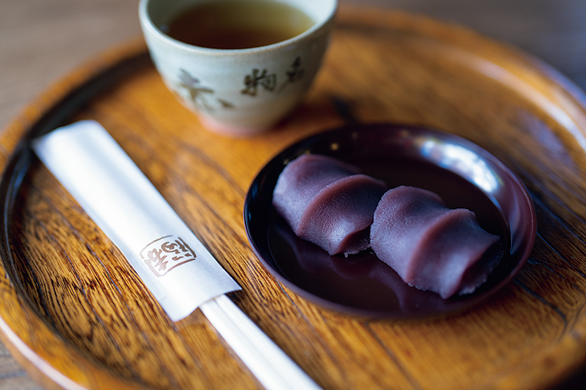
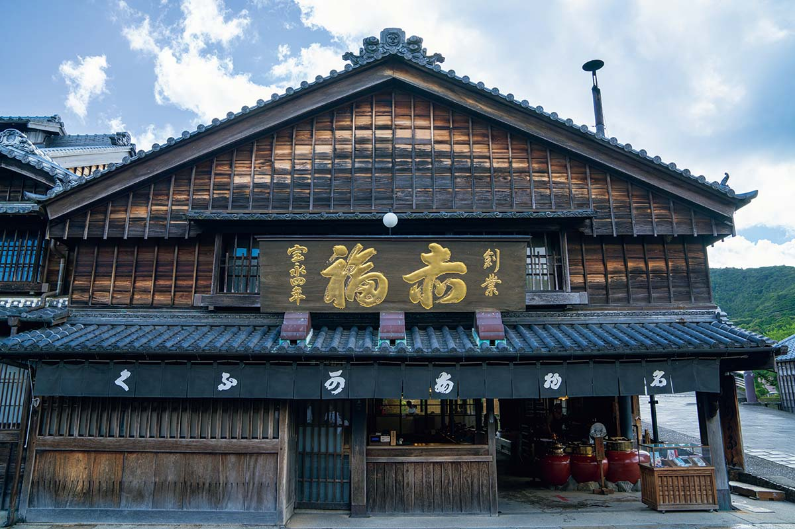
Сегодня Охараи-мати принимает около пяти миллионов гостей в год, и в это трудно поверить, если знать, что было в конце 1970-х и начале 1980-х: тогда сюда приезжали лишь около 200 000 человек в год. Люди пересели на машины и ездили от парковки к святилищу и обратно, не заглядывая в квартал. Вся поездка занимала минут сорок, и Исэ прозвали местом, где туристы задерживаются меньше всего в Японии.
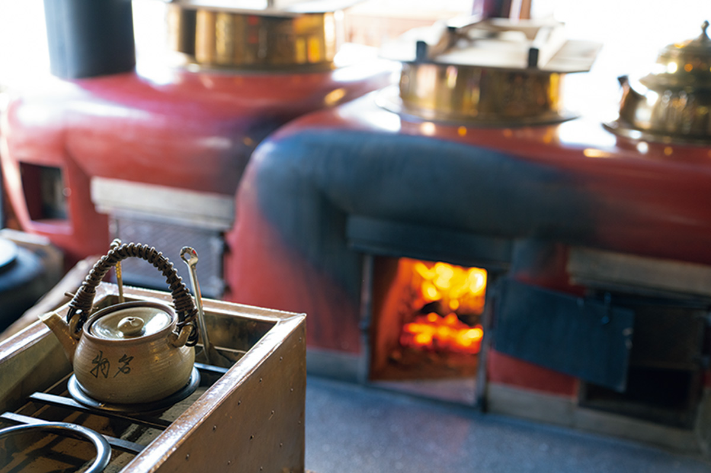
По словам нынешнего президента компании, жители Исэ всегда шли по жизни вместе со святилищем, и многие, наверное, думали, что гости вернутся сами, стоит лишь дождаться следующей перестройки. Святилище Исэ уже 1300 лет раз в 20 лет отстраивают заново: делают новые здания, одежды и утварь богов и переносят в них святыню. Этот обряд, сикинэн сэнгу, в год перестройки собирает толпы, и для города он означает долгожданный приток гостей.
Десятый глава Акафуку ждать не стал. Он решил воссоздать старую улицу и вернуть сюда гостеприимство в духе Исэ. В 1985 году открылась чайная «Исудзу-тяя», где продают свежие сладости и подают чай. В 1989 году в бывшем ресторане-рёкане открылся ресторан местной кухни «Суши-кю». Одновременно Акафуку выкупал землю, убирал провода под землю и мостил улицу камнем, а в 1991 году снёс собственное офисное здание, которое не вписывалось в старый квартал. В 1993 году в Охараи-мати открылась Окагэ-ёкотё, улица, которую Акафуку придумал и построил целиком.
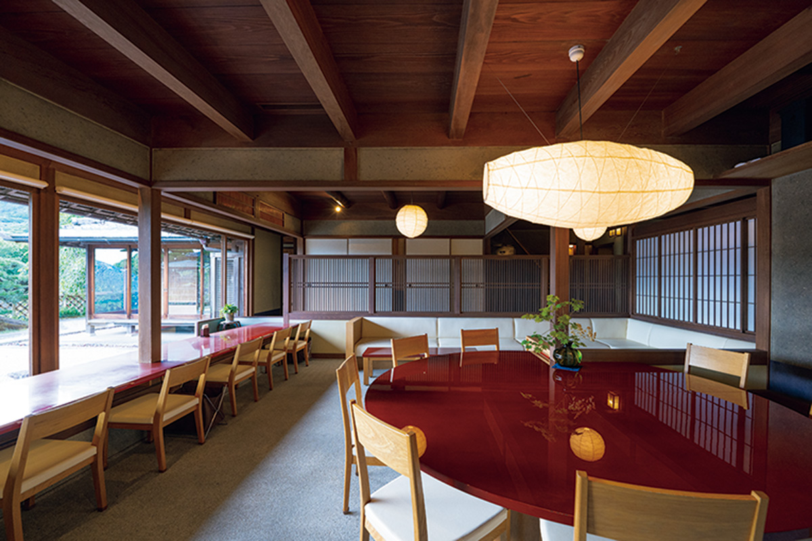
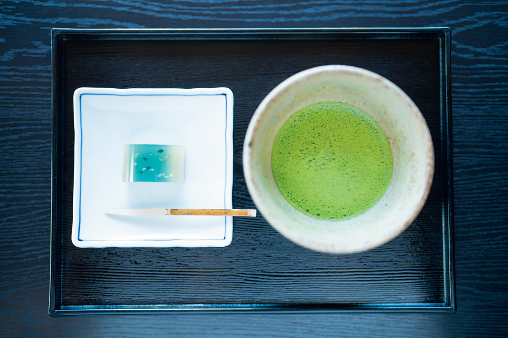
Главный магазин Акафуку
- Адрес
- префектура Миэ, Исэ, Удзи-Наканокири-тё, 26
- Телефон
- +81 596-22-7000 (справочная)
- Часы работы
- 5:00–17:00 (в сезон время меняется)
- Выходные
- без выходных
- Сайт
- akafuku.co.jp
Чайная «Исудзу-тяя»
- Адрес
- префектура Миэ, Исэ, Удзи-Наканокири-тё, 30
- Телефон
- +81 596-22-7000 (справочная)
- Часы работы
- 9:00–17:00 (кафе 9:30–16:30)
- Выходные
- без выходных
- Сайт
- isuzuchaya.com
Улица
Окагэ-ёкотё: старый Исэ, построенный заново
Окагэ-ёкотё занимает около 4000 цубо, примерно 13 000 квадратных метров, почти посередине Охараи-мати. Здешние дома повторяют постройки вдоль старой дороги в Исэ и по соседству, а некоторые перевезены сюда целиком. Ворот и забора у улицы нет, она просто продолжает квартал.
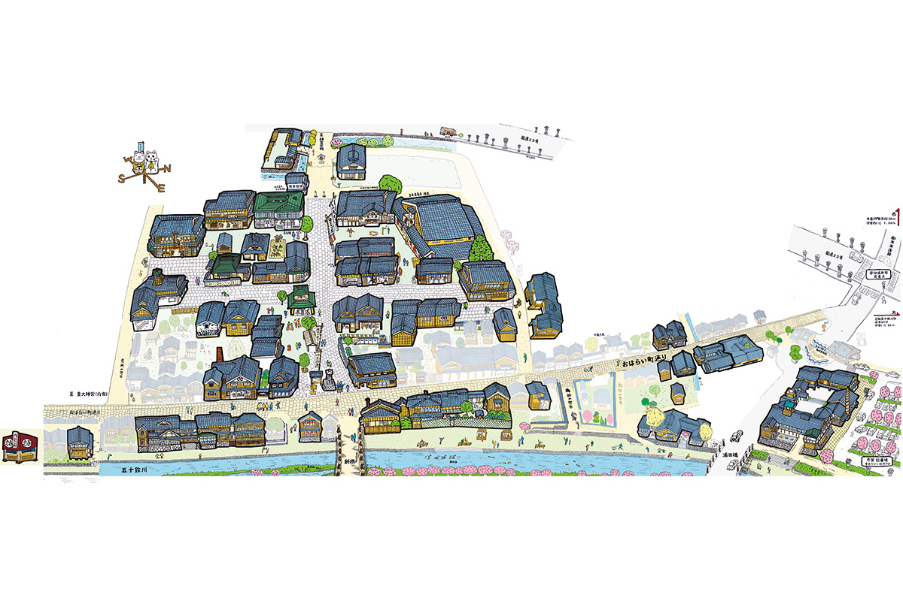
В 1993 году здесь открылись 27 заведений: лавки с плетёными шнурами из Ига, жемчугом и хлопком Мацусака, а рядом рестораны с акафуку-моти, лапшой исэ-удон и рыбацкой кухней. Сегодня их 57. Можно просто бродить без цели и узнавать Исэ по мелочам: по обычаям, по истории, по тому, как здесь встречают людей. Десятый глава Акафуку хотел, чтобы у улицы было своё гостеприимство, и так появились живые барабаны. С деревянной башни, в основном по выходным, играет своя команда «Синъон-тайко».
Улица стала сердцем квартала, помогла и мода на «места силы», и гостей в Исэ с каждым годом становилось больше. Но главный обычай остался прежним: поить паломников чаем, как в дни сэгё. Его символ это печь-камадо в главном магазине Акафуку. Магазин открывается в 5 утра, и около четырёх в печи разводят огонь. По традиции дома это делает хозяйка, окамисан, а сейчас её роль исполняет президент компании.
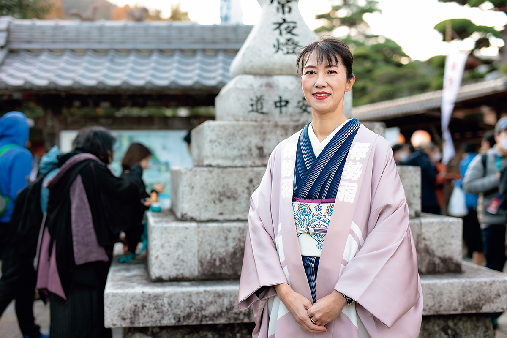
«Каждое утро я прихожу в пятом часу, чтобы разжечь печь, и стараюсь хранить гостеприимство, которое передавали из поколения в поколение. Ранним утром воздух у святилища особенный. Мне бы хотелось, чтобы эту свежесть почувствовали и вы»
президент компании и хозяйка Акафуку
«Следующая, 63-я перестройка будет в 2033 году, и подготовка уже началась. Именно сейчас, у святилища, которое для японцев остаётся опорой души, хочется рассказывать о красоте Исэ и всей Японии и передать её дальше»
президент компании и хозяйка Акафуку
В 2025 году Акафуку начал обновлять «Окагэ-дза», зал с экспозицией на улице. За дело взялась визуальная студия WOW, которая делала видео для павильонов выставки «Экспо-2025» в Осаке и интерактивную работу «BAKERU» по мотивам народных представлений.
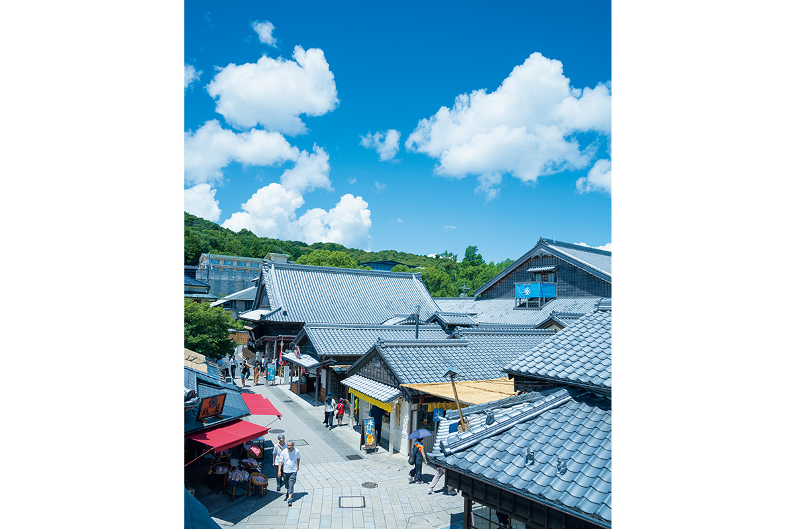
Улица Окагэ-ёкотё
- Адрес
- префектура Миэ, Исэ, Удзи-Наканокири-тё, 52
- Телефон
- +81 596-23-8838 (справочная)
- Часы работы
- январь–февраль 9:30–17:00 (в феврале по выходным и праздникам до 17:30); март–июль 9:30–17:30 (с апреля по июль по выходным и праздникам до 18:00); август–сентябрь 9:30–18:00; октябрь 9:30–17:30; ноябрь–декабрь 9:30–17:00. У каждого заведения свои часы, их лучше уточнить заранее
- Выходные
- без выходных
- Сайт
- okageyokocho.com
Еда
Что попробовать на Окагэ-ёкотё
«Исэ-дзуси Умисати Ямасати»
В 2024 году на улице открылась стоячий суши-бар «Исэ-дзуси Умисати Ямасати». Рыбу и морепродукты берут в основном из Исэ-Сима, набор каждый день свой, а заказывать можно хоть по одному кусочку. Восемь нигири в 2025 году стоили 3000 иен. Кроме местных начинок вроде угря из Исэ здесь есть редкая закуска: мускул жемчужной устрицы, 500 иен в 2025 году.
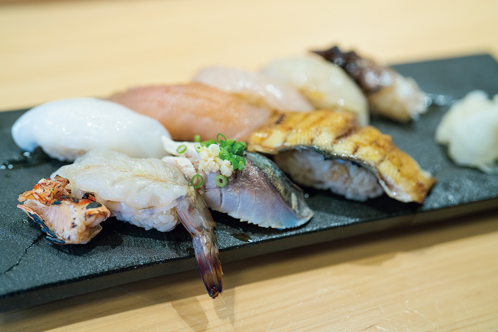
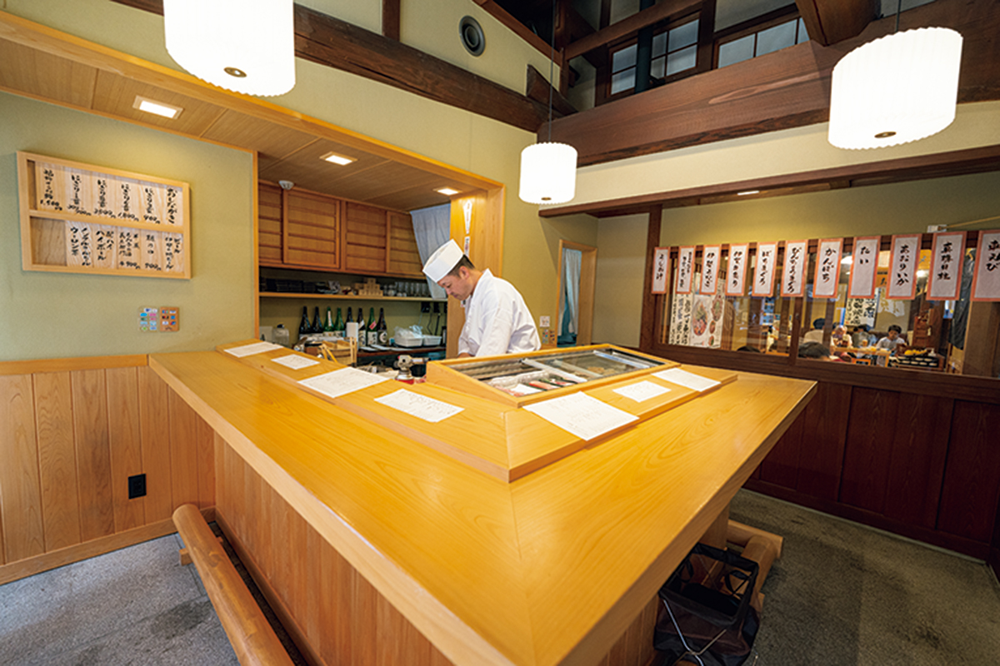
«Исэ-дзуси Умисати Ямасати»
- Адрес
- префектура Миэ, Исэ, Удзи-Наканокири-тё, 52 (на улице Окагэ-ёкотё)
- Сайт
- okageyokocho.com
«Фукусукэ»
В «Фукусукэ» подают исэ-удон, местную лапшу: толстую, мягкую и упругую, под сладковатым густым соусом. Порция стоила 650 иен в 2025 году, а в меню бывают и сезонные блюда.
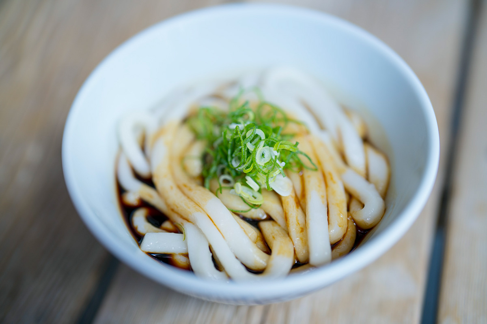
«Фукусукэ»
- Адрес
- префектура Миэ, Исэ, Удзи-Наканокири-тё, 52 (на улице Окагэ-ёкотё)
- Сайт
- okageyokocho.com
«Суши-кю»
«Суши-кю» занимает бывший ресторан-рёкан с долгой историей, где когда-то останавливались императорские посланники. Главное блюдо здесь тэконэ-дзуси, рыбацкая еда Исэ-Сима, от 1500 иен в 2025 году. Говорят, рыбаки разделывали только что пойманного полосатого тунца кацуо прямо в лодке, мариновали в соевом соусе и руками перемешивали с рисом.
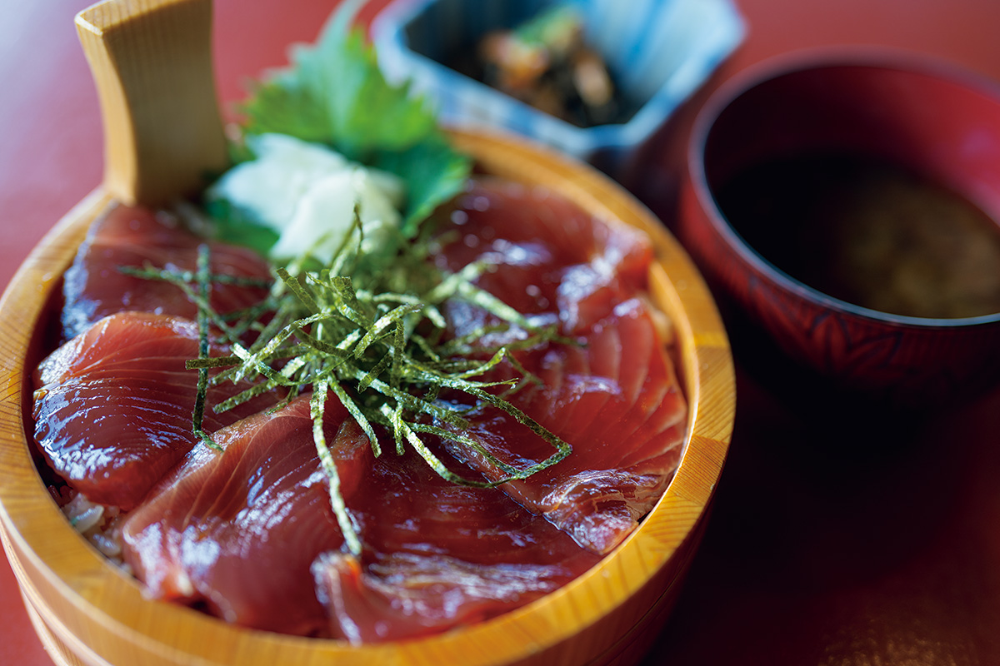
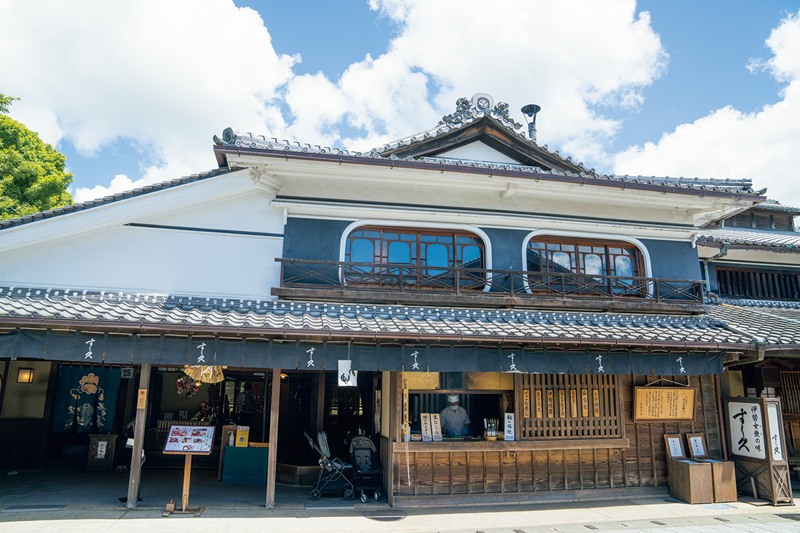
«Суши-кю»
- Адрес
- префектура Миэ, Исэ, Удзи-Наканокири-тё, 52 (на улице Окагэ-ёкотё)
- Сайт
- okageyokocho.com
«Синокан» и «Хайкара-сан»
Среди японских домов улицы выделяется светлый особняк в западном стиле «Синокан». Он повторяет дом Морото в городе Кувана, который охраняется государством как важное культурное достояние. На втором этаже работает ресторан «Хайкара-сан» с карри и омурайсу, японским омлетом с рисом, по старым рецептам.
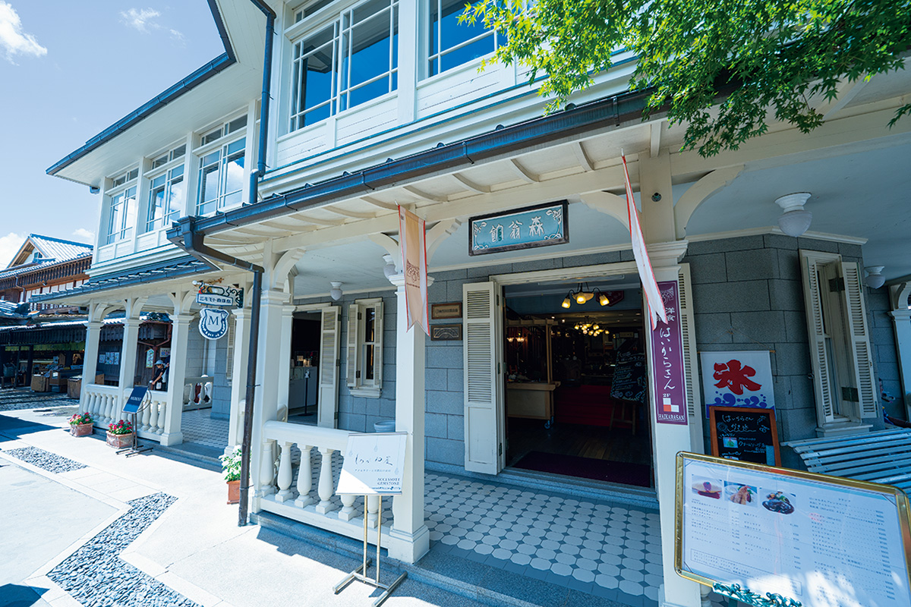
Ресторан «Хайкара-сан»
- Адрес
- префектура Миэ, Исэ, Удзи-Наканокири-тё, 52 (на улице Окагэ-ёкотё)
- Сайт
- okageyokocho.com
Новое
«Окагэ ясики»: благодарность, с которой можно играть
Летом 2023 года Акафуку и студия WOW задумали обновить «Окагэ-дза», главный зал улицы. 3 июля 2026 года на его месте открылся павильон «Окагэ ясики». В Исэ тогда уже шли обряды окики, когда в святилище торжественно ввозят священные деревья для перестройки 2033 года, и город оживился. Новый павильон стал местом, где играют вместе с «Окагэсама», образами благодарности чему-то невидимому.
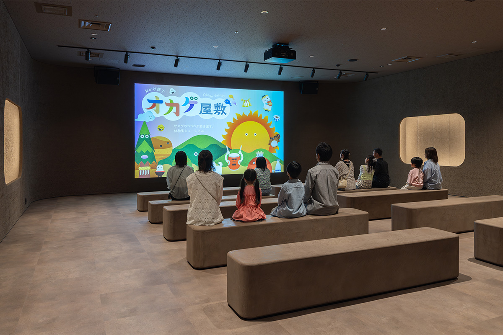
Окагэсама это силы природы, без которых не было бы риса: солнце, земля, лягушки. Рисоводство важно и для самого святилища Исэ, и образы эти японцам близки. В просторном зале устроены семь уголков с названиями вроде «Окагэ-кагэасоби», «Окагэ-суитти» и «Окагэ-мацури», и ходить между ними можно в любом порядке. Придумали их WOW и компания, которая делает музейные экспозиции.
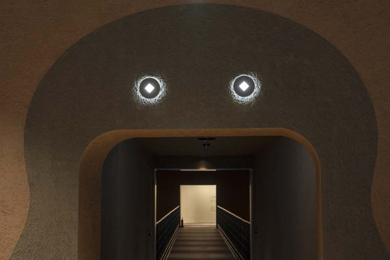
Каждый уголок откликается на движение: сложи руками тень, нажми кнопку или подвигайся, и на экране появятся и запляшут цифровые Окагэсама.
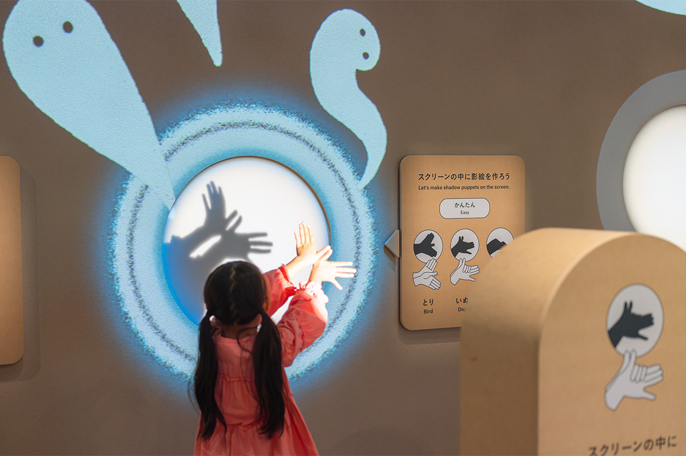
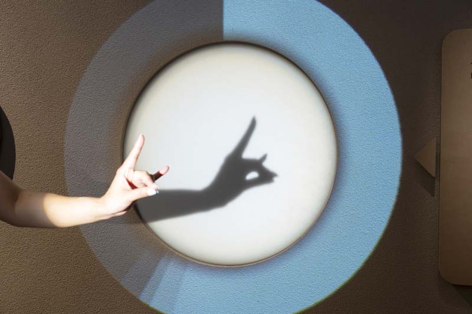
Смысл
Унести с собой чью-то «окагэ»
Рядом с новыми технологиями здесь есть и простые занятия для взрослых и детей. В «Окагэсама сутампу» можно собрать своего Окагэсама из штампов, а в «Окагэсама буккусу» сесть и полистать книги и книжки с картинками об Исэ.
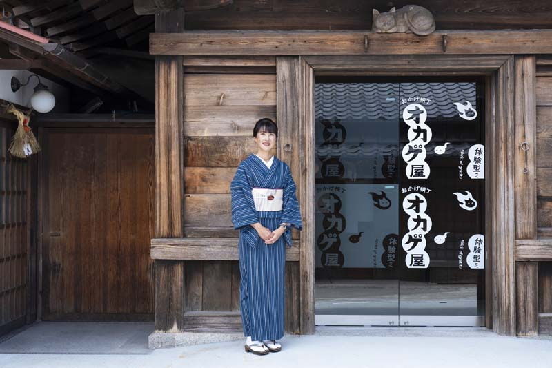
Проводник между Окагэсама и гостями это «окагэ-ину», собака-паломник. По преданию, в эпоху Эдо собаки иногда шли в Исэ вместо своих хозяев. Этого пса давно любят на Окагэ-ёкотё, а теперь он появился и в павильоне.
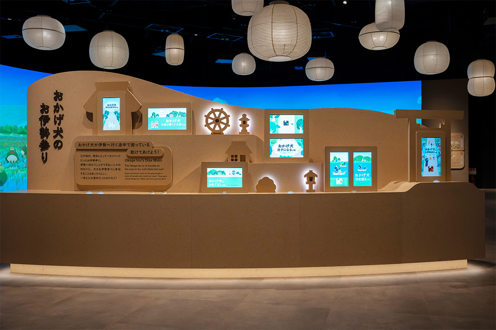
«Встретить тех, кто пришёл на поклонение в Исэ, так, чтобы им было хорошо, это наше дело как жителей Исэ. В 2026 году Акафуку исполняется 319 лет, и всё это время мы торгуем благодаря святилищу. Исполнять эту роль с благодарностью за дары, на которых держится жизнь, это миссия компании. Одна из её частей и есть „Окагэ ясики“»
президент Акафуку
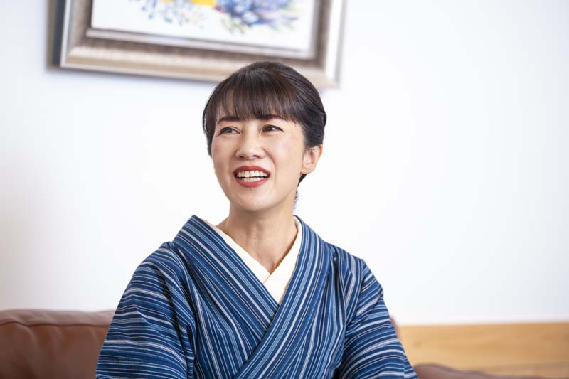
Японцы говорят перед едой «итадакимасу», после еды «готисосама», ласково называют солнце «охисама», а бобы «омамэсан». За всем этим стоит чувство «окагэсама», благодарности, которое живёт во многих людях, даже если они о нём не задумываются. Павильон у святилища Исэ, которое называют родиной японской души, напоминает о нём и предлагает увезти домой простую мысль: то, как мы живём сейчас, возможно, чья-то заслуга.
Впереди
Улица, куда хочется возвращаться
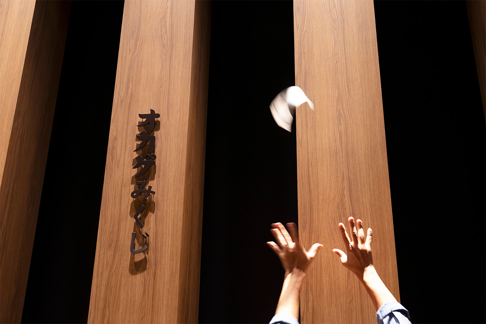
Раньше на Окагэ-ёкотё было мало мест, где можно спокойно переждать жару или дождь и где могли бы поиграть дети. Павильон дал паломникам ещё один способ провести здесь время.
«Когда говорят о готовом здании, думают о стенах и оборудовании. А „Окагэ ясики“ надо почувствовать. Суть останется прежней: радость, когда работают все пять чувств. Но мы будем понемногу обновлять павильон, чтобы люди всех возрастов приходили снова и снова. Мы нарочно оставили место для недостроенного и хотим, чтобы павильон рос вместе с гостями»
президент Акафуку
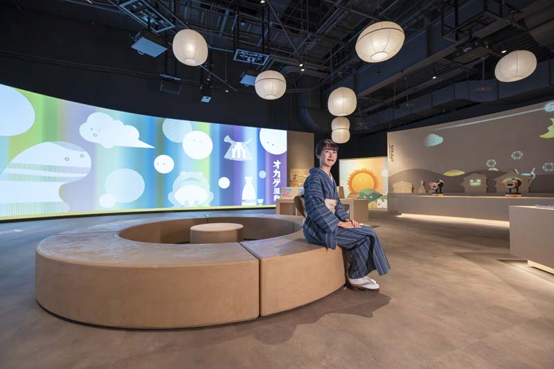
Исэ остаётся одним из главных туристических городов страны и святыней, куда тянутся люди всех возрастов. Для «Окагэ ясики» всё только начинается. Глядя на перестройку 2033 года и дальше, Акафуку через это место передаёт следующим поколениям чувство благодарности, которым живёт Исэ.
Павильон «Окагэ ясики»
- Адрес
- префектура Миэ, Исэ, Удзи-Наканокири-тё, 52 (на улице Окагэ-ёкотё)
- Телефон
- +81 596-23-8844
- Часы работы
- 10:00–17:00 (последний вход в 16:00)
- Выходные
- нерегулярные
- Цены / Вход
- в будни взрослые 1500 иен, дети 800 иен; в выходные и праздники взрослые 1800 иен, дети 1000 иен
- Сайт
- okageyashiki.com
Фото: Томоаки Окуяма, Садахо Найто.